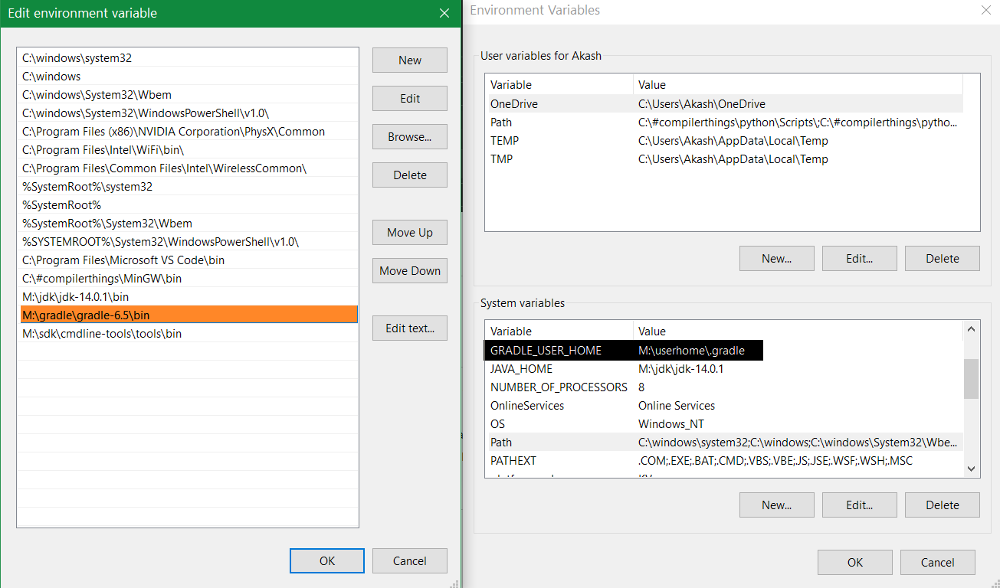

Gradle a dependency manager
In this post we'll see the need of a dependency manager and how gradle can be used to do that.
We'll cover:
Why Gradle
Gradle is a build-automation tool which can do many things and dependency management is just one of them.
But why we a dependency management tool?
Consider this java code,
import org.apache.commons.lang3.StringUtils;
public class something{
public static void main(String[] args){
System.out.println(StringUtils.swapCase("this is something"));
}
}This code uses the method swapCase from class StringUtils. the developers who developed stringUtils class also developed some other useful classes and packed them in a jar file. Now that jar file is available in the mavenCentral repository ( here ). You can get that jar put it in the same folder with something.java and execute commands like
running command-- javac -cp .;commons-lang3-3.3.2.jar something.java -- you can compile the something.java
running command-- java -cp .;commons-lang3-3.3.2.jar something -- you can execute the something.classWhen you are working on something big, it's likely that you'll use like 10-20 class files from different packages. Moreover if you are working on two or more projects concurrently, the other projects will also have dependencies.I am not saying you can't do it it's just that it won't hurt if we have a simple system which does these things for you.
Now Gradle is a tool which can do these things for us.
Set Gradle
You can get gradle here . Unzip this file anywhere you want. You'll see a bin folder in it. Now set the following things:
- Add path of the bin folder in environment variable 'Path'(left image)
- Add a environment variable GRADLE_USER_HOME with path of any folder you want.(right image)

By default, GRADLE_USER_HOME variable is set to your 'users' directory. But to understand the
things you can set the variable to any folder. When we use gradle first time a folder '.gradle' is
created in GRADLE_USER_HOME. So there are two main folders
gradle does it's things in:
1. Gradle folder with binaries(the one you unzipped).
2. '.gradle' folder inGRADLE_USER_HOME.
Do Gradle
The task is we want to get the StringUtils dependency. (with gradle of course)
Here is something.java again.
import org.apache.commons.lang3.StringUtils;
public class something{
public static void main(String[] args){
System.out.println(StringUtils.swapCase("this is something"));
}
}To use gradle (after setting it ) we need to create 'build.gradle' text file in the same folder with something.java. Here is the file with comments explaining each line.
// by applying a plugin we increase the things gradle can do.
plugins {
id 'java' // allows gradle to use commands like 'javac'.
id 'application' // allows gradle to actually invoke(run) main method of the specified mainClass.
repositories{
mavenCentral() //maven central is the repository(a online folder thing) from which we get the required dependency.
}
dependencies{
implementation "org.apache.commons:commons-lang3:3.3.2" // To get the jar file in which we have the StringUtils.class.
}
sourceSets{
main.java.srcDir "." // the specify the directory in which something.java is located. "." means current directory.
// By default it is "./src/main/java".
}
application {
mainClassName = 'something' // specifying the main class for application plugin to run.
}
Now by running
gradle build
in cmd, gradle get's the dependency from mavenCentral repository in it's cache folder located at
GRADLE_USER_HOME/.gradle/caches/modules-2/files-2.1
( It'll differ for your version of gradle). And generates the something.class in
CURRENT_DIR/build/classes/java/main/something.class.
Also by running
gradle run
in cmd, gradle uses it's application plugin's 'run' task and invokes the main method in something class.
That's how dependency management works in gradle. We can declare 'n' no. of dependencies from 'n'
no. of repositories without worrying about a thing. Also if any other project uses any of the
already downloaded dependencies, gradle just gets it in the it's cache folder.
Dependency management is just one of the things that gradle can do. In my opinion the 'Gradle'
makes a lot of sense if it is introduced as just a dependency manager and then with all the other
capabilities.
Hope this helped you.
Adios!